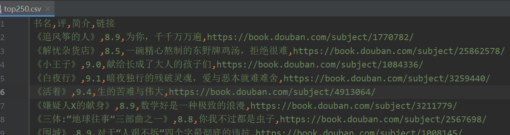
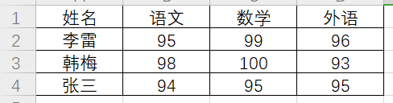
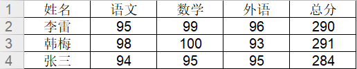

爬取豆瓣top250书籍
import requests
import json
import csv
from bs4 import BeautifulSoup
books = []
def book_name(url):
res = requests.get(url)
html = res.text
soup = BeautifulSoup(html, 'html.parser')
items = soup.find(class_="grid-16-8 clearfix").find(class_="indent").find_all('table')
for i in items:
book = []
title = i.find(class_="pl2").find('a')
book.append('《' + title.text.replace(' ', '').replace('\n', '') + '》')
star = i.find(class_="star clearfix").find(class_="rating_nums")
book.append(star.text + '分')
try:
brief = i.find(class_="quote").find(class_="inq")
except AttributeError:
book.append('”暂无简介“')
else:
book.append(brief.text)
link = i.find(class_="pl2").find('a')['href']
book.append(link)
global books
books.append(book)
print(book)
try:
next = soup.find(class_="paginator").find(class_="next").find('a')['href']
# 翻到最后一页
except TypeError:
return 0
else:
return next
next = 'https://book.douban.com/top250?start=0&filter='
count = 0
while next != 0:
count += 1
next = book_name(next)
print('-----------以上是第' + str(count) + '页的内容-----------')
csv_file = open('D:/top250_books.csv', 'w', newline='', encoding='utf-8')
w = csv.writer(csv_file)
w.writerow(['书名', '评分', '简介', '链接'])
for b in books:
w.writerow(b)结果

把评分为9.0的书籍保存到book_out.csv文件中
'''
1.爬取豆瓣评分排行前250本书,保存为top250.csv
2.读取top250.csv文件，把评分为9.0以上的书籍保存到另外一个csv文件中
'''
import csv
#打开的时候必须用encoding='utf-8'，否则报错
with open('top250_books.csv', encoding='utf-8') as rf:
reader = csv.reader(rf)
#读取头部
headers = next(reader)
with open('books_out.csv', 'w', encoding='utf-8') as wf:
writer = csv.writer(wf)
#把头部信息写进去
writer.writerow(headers)
for book in reader:
#获取评分
score = book[1]
#把评分大于9.0的过滤出来
if score and float(score) >= 9.0:
writer.writerow(book)安装两个库
pip install xlrd xlwt读取excel

#4.2.如何读取excel
import xlrd
book = xlrd.open_workbook('demo.xlsx')
sheet = book.sheet_by_index(0)
#获取有多少行多少列
print(sheet.nrows) #4
print(sheet.ncols) #4
print(sheet.cell(0,0)) #text:'姓名'
print(sheet.cell_value(0,0)) #姓名
print(sheet.row_values(0)) #['姓名', '语文', '数学', '外语']
print(sheet.row_values(1,1)) #[95.0, 99.0, 96.0]求分数的总和
#4.2.如何读写excel
import xlrd, xlwt
rbook = xlrd.open_workbook('demo.xlsx')
rsheet = rbook.sheet_by_index(0)
k = rsheet.ncols
#在最后添加一列 ‘总分’
rsheet.put_cell(0,k,xlrd.XL_CELL_TEXT, '总分', None)
for i in range(1,rsheet.nrows):
#求分数总和
t = sum(rsheet.row_values(i, 1))
rsheet.put_cell(i,k,xlrd.XL_CELL_NUMBER,t,None)
wbook = xlwt.Workbook()
wsheet = wbook.add_sheet(rsheet.name)
for i in range(rsheet.nrows):
for j in range(rsheet.ncols):
wsheet.write(i,j,rsheet.cell_value(i,j))
wbook.save('out.xlsx')结果
